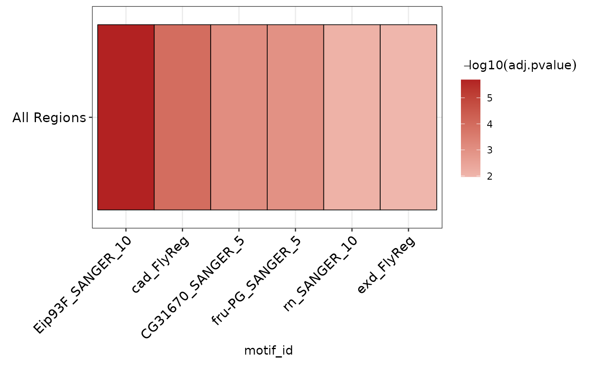
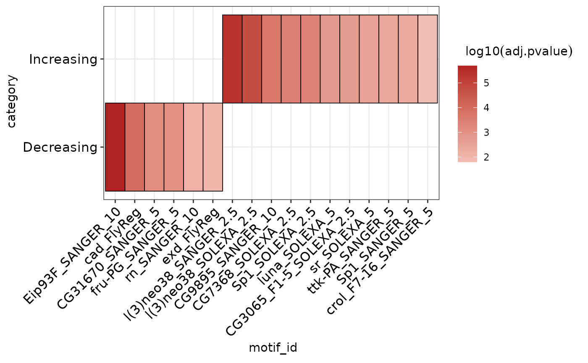

R/ame_methods.R
plot_ame_heatmap.RdPlot AME heatmap clustered by similarity in detected motifs
plot_ame_heatmap( ame, id = motif_id, group = NULL, value = -log10(adj.pvalue), group_name = NULL, scale_max = NA )
| ame | ame results data.frame |
|---|---|
| id | column of motif ids to use (default: motif_id). |
| group | grouping column if comparing across multiple ame runs (optional, default: NULL). |
| value | value to display as heatmap intensity. Default: -log10(adj.pvalue). Takes function or column name as input. If set to "normalize", will use normalized rank within `group` as the heatmap values. **If in doubt**, prefer the -log10(adj.pvalue) plot potentially in conjunction with adjusting `scale_max`. (See "Normalized rank visualization" section below for more details on how to interpret these data) |
| group_name | when group = NULL, name to use for input regions. Ignored if group is set. |
| scale_max | max heatmap value to limit upper-value of scale. Useful if distribution of `value`s vary greatly between groups. Usually a better to tweak this option than to use value = "normalize". The cumulative distribution plot generated by `ame_compare_heatmap_methods()` can be useful for selecting this value, try to pick a value which captures the largest fraction of hits across all groups while excluding outliers. |
`ggplot` object
Normalized rank visualization **NOTE:** The normalized rank visualization eliminates all real values related to statistical significance! Instead, this visualization represents the relative ranks of hits within an AME run, which already pass a significance threshold set during `runAME()`. This means that even if several motifs have similar or even identical pvalues, their heatmap representation will be a different color value based on their ranked order in the results list. This also means that using the normalized rank visualization will be misleading if there are only a few AME hits; it is only worth using if the number of hits is very large (>100). Both visualizations can be useful and reveal different properties of the data to the user during data exploration. Use `ame_compare_heatmap_methods()` to help assess differences in the two visualizations. **If in doubt**, prefer the `-log10(adj.pvalue)` representation.
Common mistake: if `value` is set to a string that is not "normalize", it will return: "Error: Discrete value supplied to continuous scale". To use a column by name, do not quote the column name.
data("example_ame", package = "memes") # Plot a single category heatmap plot_ame_heatmap(example_ame$Decreasing)# Plot a multi category heatmap grouped_ame <- dplyr::bind_rows(example_ame, .id = "category") plot_ame_heatmap(grouped_ame, group = category)